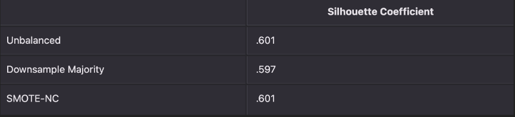
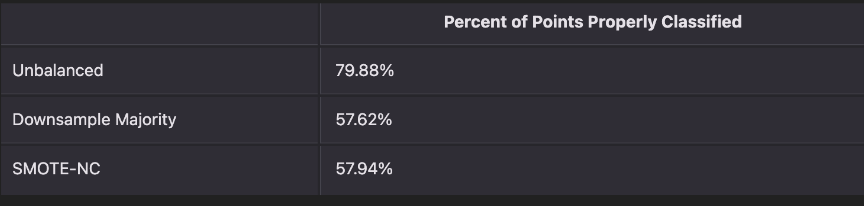
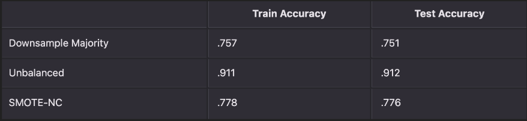
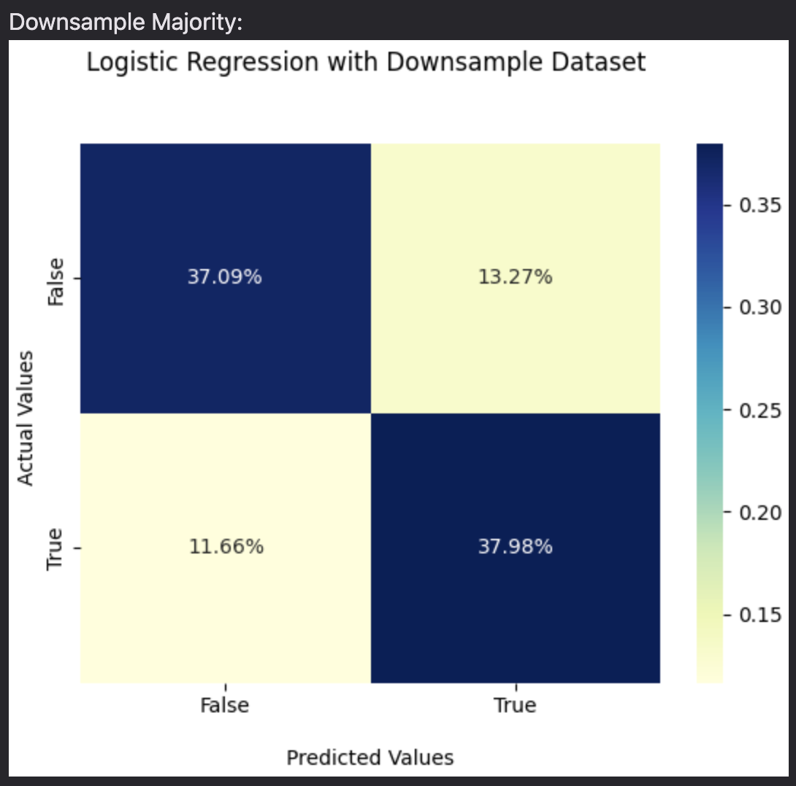
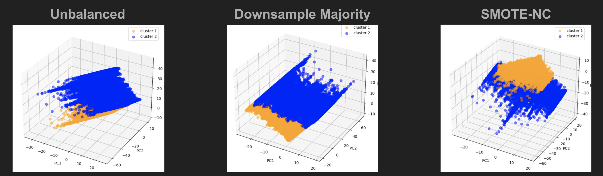

Use tabs to navigate
CS7641 Project Proposal (Indicators of Heart Disease)
Introduction, Background, and Dataset
Heart disease is currently the number 1 cause of death in the United States causing nearly 700,000 deaths per year. It is largely related to the person(s) current health conditions, as a result we will use machine learning models to identify leading factors resulting in patients’ deaths. Our dataset accounts for leading factors like BMI, smoking history, and sex which are currently identified as factors leading to heart disease.
The dataset we are using comes from the CDC and is a major part of the Behavioral Risk Factor Surveillance System (BRFSS), which conducts annual telephone surveys to gather data on the health status of U.S. residents.
Source of Data: click here
Dataset Link (Kaggle): click here
Methods
- We will start by partitioning our dataset such that 90% of our data points will be used as training data and 10% as test data. We will convert all of our features that are binary from ‘yes’ and ‘no’ to 1’s and 0’s respectively, and all categorical data such as age ranges will be processed into integer equivalents (i.e. 50-54 = 0, 55-59 = 1, etc.) From there we will use Principal Component Analysis (PCA) to reduce the dimensionality of features.
- Unsupervised
- We plan to analyze our data by first using the K-means algorithm. After receiving cluster assignments we will determine the cluster strength of each component through distortion value. We will analyze this metric using the elbow method to receive the optimal cluster count (k). We will then move on to using more complicated algorithms like GMM and DBScan with SMOTE in the case our data is unbalanced.
- We will first use Decision Tree classifiers and Deep Neural Networks (DNN) to compare test results of predicting heart disease with our other models by tuning various hyperparameters. We will then move on to SVM with XGBoost as this is prominent in some research papers.
Potential Results and Discussion
- We expect the unsupervised models to produce clusters that we may examine to discover commonalities. We anticipate finding clusters of cases of heart disease that are related (e.g., share BMI or Mental Health), as well as other clusters that are less visible and call for more investigation. We want to utilize PCA to reduce the number of dimensions and only take into account the most important features.
- Our supervised models are expected to be trained to predict whether a patient has heart disease or not based on a set of features such as age and smoking status to identify which features are the most important predictors of heart disease.
Timeline
Contribution Table
References
CS7641 Project Midterm Report (Indicators of Heart Disease)
Introduction/Background
Heart disease is currently the number 1 cause of death in the United States causing nearly 700,000 deaths per year. It is largely related to the person(s) current health conditions, as a result we will use machine learning models to identify leading factors resulting in positive diagnoses and also see if we can accurately predict subpopulations that either have or are privy to developing heart disease.
Much work has been done in this areas using various techniques on various datasets containing data on various potential heart disease factors. Rati Goel, for example, used 6 different algorithms on a dataset with data on things such as cholesterol and blood pressure[1].
Problem Definition
Identifying the types of people that are likely to have heart disease and the primary factors can be valuable in developing treatments and in early detection so that we can better monitor the health of those at risk. We hope to add onto the body of work that already exists in this specific field of research.
Dataset
About the Dataset
The dataset we are using comes from the CDC and is a major part of the Behavioral Risk Factor Surveillance System (BRFSS), which conducts annual telephone surveys to gather data on the health status of U.S. residents. This dataset accounts for leading factors like BMI, smoking history, and sex which are currently identified as factors leading to heart disease.The following is a sample of raw data from the dataset:<\p>
Source of Data: click here
Dataset Link (Kaggle): click here
Data Cleaning/Pre-processing
Overall, this particular dataset had great usability, with no null entries/missing data. Therefore, we did not have to deal with this issue. We had to perform the following on the dataset for cleaning:
- As a result, 18078 rows were dropped
For pre-processing, by looking at the data we can see there are a lot of categorical features. To solve this issue we created our own defined mappings along with sklearn’s LabelEncoder. The same snippet of raw data now looks like:
Post-processing Visualizations
Following the cleaning techniques used, we made visuals to gain insight into the distribution of all the features.
Catagorical features:

Continuous features:
We also thought it was valuable to produce a correlation table between the features:

Data Imbalance
For the class feature “HeartDisease”, previous visuals indicate that there is some amount of class imbalance. We used a couple of methods to solve this issue
- SMOTE (Synthetic Minority Over-sampling Technique) creates synthetic samples by interpolating between existing minority samples in the feature space. It randomly selects a minority sample and creates new synthetic samples along the line segments connecting it to its k nearest neighbors. SMOTE-NC is a version of SMOTE that is able to deal with the combination of both categorical and numerical features
Through the use of the above techniques, we evened out the target class equally 50-50. We will be comparing the differences in model accuracy that result from using an unbalanced dataset and the methods mentioned above.
Feature Reduction
PCA
PCA (Principal Component Analysis) is a popular dimensionality reduction technique used to transform high-dimensional datasets into a lower-dimensional space. It does this by identifying the most important features that explain the majority of the variance in the data. The table below shows the percent variance captured by finding 2 and 3 principal components:
It seems clear that we should be using minimally 3 principle components when training our unsupervised learning models. The following are what the PCAs for each dataset type when downsampling to 1000 points for the purpose of visuals:
Methods (So Far)
Unsupervised
We started working with KMeans because it is quite a simple algorithm that can potentially tell us a lot about the data that we have. We will be looking at our results through two lenses. First we will set the number of clusters to 2, as this is representative of our binary target feature. We will then see how the clustering of k=2 can match up with our classification feature. Though from looking at previous PCA visualizations, there is likely not going to be good accuracy. We will also use the Elbow Method to find the optimal number of clusters and run cluster analysis on it to see what kind of features result in certain clusters. Experimentally, we will run all of these with our 3 separate datasets (Unbalanced, Downsample Majority, SMOTE-NC).
Supervised
Logistic Regression was a prominent algorithm that we saw for general classification of Heart Disease. There are a couple of parameters that need to be defined to use sklearn’s Logistic Regression. We will be using l2 regularization for penalty, Stochastic Average Gradient Decent for the solver, and 1 for the inverse regularization strength. We will again be evaluating the model’s performance using out 3 datasets (Unbalanced, Downsample Majority, SMOTE-NC) as we want to see whether handling this class imbalance is necessary or not and if any method is better than another.
Results/Discussion
Supervised
First, we ran KMeans on our 3 separate datasets (Unbalanced, Downsample Majority, SMOTE-NC) after running PCA on them while setting the number of clusters to 2. This is what the resulting clusterings look like per dataset:
We evaluated the clustering using Silhouette Coefficients, which were:
Generally, we can say that the clusters had average to above-average separation. We then wanted to see how well these clusters mapped to the target feature which was whether the person had Heart Disease or not. We mapped the points in these clusters back to the target feature and found the following percentages of points correctly classified.
We can see that the unbalanced dataset has a significant percentage of properly classified points. However, because we only have 2 clusters here, and there is class imbalance, it is potentially skewed so the statistic may not too helpful in making any conclusions. The other two datasets however are balanced and do not have the same issues. From the table these percentages indicate that it does a little better than a coin toss. This may indicate that the feature with high variance that get captured by PCA are not key features in determining the target feature. We then did more cluster analysis on the features that might have differentiated the two clusters. We did this by linking the clusters back to their original dataset and averaging the values per feature per cluster. We chose to focus on the Downsample Majority dataset alone as an example.
From this, the differences that pop out immediately are with the PhysicalHealth and MentalHealth features. They are the features that are most different per cluster. These features might vary the most but probably are not indicative of anything related to the target feature.
Next, we ran KMeans again but used the Elbow Method to find the optimal number of clusters. It seemed from the resulting graphs that 4 was generally a good number across datasets. This is the graph from using the Elbow Method on the Downsample Majority dataset:
We decided to then run KMeans with 4 clusters on just the Downsample Majority dataset. The clustering result looked like:
The Silhouette Coefficient for this clustering was .590 which was similar to the coefficient when there were 2 clusters. We again wanted to see what features were similar in each cluster. Repeating the previous clustering analysis, we got:
From the results we can see it was still a combination of the same features (PhysicalHealth and MentalHealth) that stood out the most as differentiators, while Stroke also seemed to vary but to a lesser extent. We can generally draw the same conclusions as before. It might be useful to remove these columns or decrease their range so that it is has less of an effect on clustering as a whole.
Supervised Learning
As previously stated, we ran Logistic Regression on our 3 datasets (Unbalanced, Downsample Majority, SMOTE-NC) using l2 regularization for penalty, Stochastic Average Gradient Decent for the solver, and 1 for the inverse regularization strength. We also set the max iterations to 200 to ensure model convergence. After running Logistic Regression on our 3 datasets, we had the following results:
Given the similarities between train and test accuracy across the board, we can say our models generalize well. Here are the confusion matrices for the 3 datasets in percentage form for the number of points in each category divided by the total number of points:

Overall, we found the unbalanced dataset far outperformed the balanced datasets for Logistic Regression.
Contribution Table
References
CS7641 Project Final Report (Indicators of Heart Disease)
Introduction/Background
Heart disease is currently the number 1 cause of death in the United States causing nearly 700,000 deaths per year. It is largely related to the person(s) current health conditions, as a result we will use machine learning models to identify leading factors resulting in positive diagnoses and also see if we can accurately predict subpopulations that either have or are privy to developing heart disease.
Much work has been done in this areas using various techniques on various datasets containing data on various potential heart disease factors. Rati Goel, for example, used 6 different algorithms on a dataset with data on things such as cholesterol and blood pressure[1].
Problem Definition
Identifying the types of people that are likely to have heart disease and the primary factors can be valuable in developing treatments and in early detection so that we can better monitor the health of those at risk. We hope to add onto the body of work that already exists in this specific field of research.
Dataset
About the Dataset
The dataset we are using comes from the CDC and is a major part of the Behavioral Risk Factor Surveillance System (BRFSS), which conducts annual telephone surveys to gather data on the health status of U.S. residents. This dataset accounts for leading factors like BMI, smoking history, and sex which are currently identified as factors leading to heart disease.The following is a sample of raw data from the dataset:<\p>
Source of Data: click here
Dataset Link (Kaggle): click here
Data Cleaning/Pre-processing
Overall, this particular dataset had great usability, with no null entries/missing data. Therefore, we did not have to deal with this issue. We had to perform the following on the dataset for cleaning:
- As a result, 18078 rows were dropped
For pre-processing, by looking at the data we can see there are a lot of categorical features. To solve this issue we created our own defined mappings along with sklearn’s LabelEncoder. The same snippet of raw data now looks like:
Post-processing Visualizations
Following the cleaning techniques used, we made visuals to gain insight into the distribution of all the features.
Catagorical features:
Continuous features:
We also thought it was valuable to produce a correlation table between the features:
Data Imbalance
For the class feature “HeartDisease”, previous visuals indicate that there is some amount of class imbalance. We used a couple of methods to solve this issue
- SMOTE (Synthetic Minority Over-sampling Technique) creates synthetic samples by interpolating between existing minority samples in the feature space. It randomly selects a minority sample and creates new synthetic samples along the line segments connecting it to its k nearest neighbors. SMOTE-NC is a version of SMOTE that is able to deal with the combination of both categorical and numerical features
Through the use of the above techniques, we evened out the target class equally 50-50. We will be comparing the differences in model accuracy that result from using an unbalanced dataset and the methods mentioned above.
Feature Reduction
PCA
PCA (Principal Component Analysis) is a popular dimensionality reduction technique used to transform high-dimensional datasets into a lower-dimensional space. It does this by identifying the most important features that explain the majority of the variance in the data. The table below shows the percent variance captured by finding 2 and 3 principal components:
It seems clear that we should be using minimally 3 principle components when training our unsupervised learning models. The following are what the PCAs for each dataset type when downsampling to 1000 points for the purpose of visuals:
Methods
Unsupervised
We started working with KMeans because it is quite a simple algorithm that can potentially tell us a lot about the data that we have. We will be looking at our results through two lenses. First we will set the number of clusters to 2, as this is representative of our binary target feature. We will then see how the clustering of k=2 can match up with our classification feature. Though from looking at previous PCA visualizations, there is likely not going to be good accuracy. We will also use the Elbow Method to find the optimal number of clusters and run cluster analysis on it to see what kind of features result in certain clusters. Experimentally, we will run all of these with our 3 separate datasets (Unbalanced, Downsample Majority, SMOTE-NC).
GMMs are a more advanced model in comparison to KMeans, utilizing Gaussian kernels to model each cluster. It is also a soft-clustering algorithm as opposed to KMeans which hard-clusters. We wanted apply our insight from KMeans and apply it to a type of model that may be able to better capture the characteristics of our data. Given the data itself is CDC survey data, we can analyze our KMeans model to make educated guesses on the features that may improve our clustering. We will use the approach as before, setting the number of clusters to 2, again matching it to our target feature. We hope that with this more nuanced model and with feature optimizations, our clusters will be closer to our target feature. We will focus solely on one of our datasets (Downsample Majority) and also do cluster analysis to see what features end up distinguishing clusters.
Unsupervised
Logistic Regression was a prominent algorithm that we saw for general classification of Heart Disease. There are a couple of parameters that need to be defined to use sklearn’s Logistic Regression. We will be using l2 regularization for penalty, Stochastic Average Gradient Decent for the solver, and 1 for the inverse regularization strength. 20% of the dataset will be designated as the test set. We will again be evaluating the model’s performance using out 3 datasets (Unbalanced, Downsample Majority, SMOTE-NC) as we want to see whether handling this class imbalance is necessary or not and if any method is better than another. We then will see if any insight into features we gain from our unsupervised methods can improve model accuracy, specifically with the Unbalanced and Downsample Majority datasets.
XGBoost is a classifier mentioned by Nagavelli et. al. as something they found to be accurate in their research[3]. It is generally described as a model that uses an ensemble of gradient-boosted decision trees that is great for classification. It is known for its ability to handle complex, high-dimensional data, and that may be more suited to this situation. We will define a few parameters that the classifier needs. We set the learning rate to 0.1, number of estimators to 100, and maximum depth to 4 to start with. 20% of the dataset will be designated as the test set. We will again be evaluating the model’s performance using our 3 datasets (Unbalanced, Downsample Majority, SMOTE-NC).
Random Forest Classifier is an ensemble method that combines multiple decision trees to create a model for classification tasks. The main draw of this algorithm for us is the fact that it allows for feature importance estimation which will tell us, in this context, what features may be important in determining heart disease. Setting the maximum depth of the decision trees to 8 and allocating 20% of the data to testing, we will again be evaluating the model’s performance using our 3 datasets (Unbalanced, Downsample Majority, SMOTE-NC) and discussing the important features that the model finds.
Bagging(Bootstrap Aggregation) is an ensemble algorithm that fits multiple models on different subsets of a training dataset, then combines the predictions from all models. Bagging allows many weak learners to combine efforts to outdo a single strong learner, so it prevents overfitting the model.
A Naive Bayes classifier is a probabilistic machine learning model that’s used for classification tasks. Based on the Bayes theorem, the Naive Bayes Classifier gives the conditional probability of an event A given event B. Since Bayes-based models are extremely popular in medical research, we used a Bayes Classification for Heart Disease prediction.
Results/Discussion
Unsupervised
First, we ran KMeans on our 3 separate datasets (Unbalanced, Downsample Majority, SMOTE-NC) after running PCA on them while setting the number of clusters to 2. This is what the resulting clusterings look like per dataset:
We evaluated the clustering using Silhouette Coefficients, which were:
Generally, we can say that the clusters had average to above-average separation. We then wanted to see how well these clusters mapped to the target feature which was whether the person had Heart Disease or not. We mapped the points in these clusters back to the target feature and found the following percentages of points correctly classified.
We can see that the unbalanced dataset has a significant percentage of properly classified points. However, because we only have 2 clusters here, and there is class imbalance, it is potentially skewed so the statistic may not too helpful in making any conclusions. The other two datasets however are balanced and do not have the same issues. From the table these percentages indicate that it does a little better than a coin toss. This may indicate that the feature with high variance that get captured by PCA are not key features in determining the target feature. We then did more cluster analysis on the features that might have differentiated the two clusters. We did this by linking the clusters back to their original dataset and averaging the values per feature per cluster. We chose to focus on the Downsample Majority dataset alone as an example.
From this, the differences that pop out immediately are with the PhysicalHealth and MentalHealth features. They are the features that are most different per cluster. These features might vary the most but probably are not indicative of anything related to the target feature.
Next, we ran KMeans again but used the Elbow Method to find the optimal number of clusters. It seemed from the resulting graphs that 4 was generally a good number across datasets. This is the graph from using the Elbow Method on the Downsample Majority dataset:
We decided to then run KMeans with 4 clusters on just the Downsample Majority dataset. The clustering result looked like:
The Silhouette Coefficient for this clustering was .590 which was similar to the coefficient when there were 2 clustersWe again wanted to see what features were similar in each cluster. Repeating the previous clustering analysis, we got:
From the results we can see it was still a combination of the same features (PhysicalHealth and MentalHealth) that stood out the most as differentiators, while Stroke also seemed to vary but to a lesser extent. We can generally draw the same conclusions as before. It might be useful to remove these columns or decrease their range so that it is has less of an effect on clustering as a whole.
Our KMeans revealed features of high variance that did not result in clusters that related well to our target feature. These features were PhysicalHealth and MentalHealth. Looking through the data it seems like they defaulted to 0.0 if the respondent did not list anything. We decided to then remove these features, along with GenHealth (General Health rating), which seemed to have the same pitfall, Race, which I though might not be as relevant, and SleepTime, which may have had the same pitfall mentioned. We are focusing on the Downsample Majority dataset specifically. After dropping the aforementioned columns from the Downsample Majority dataset, we ran PCA on it, yielding the following results:
Given both number of principle components had high captured variance, we ran both through GMM with number of clusters equal to 2. This is what the clusters looked like:
We again checked the silhouette coefficients of the clusterings:
Curiously, these coefficients were much less the ones from KMeans. An explanation for this is that we got rid of some high variance features that probably made the separation of the clusters more clear, thus having a higher silhouette coefficient. We then mapped these clusters back to the target feature and saw the following:
Though the clusters from 2 PCs are relatively similar to the results found in KMeans, we see that the clusters from 3 PCs is at least some degree of significance higher. The reasons for this could be the model itself but also could say something about the features we removed. One theory is that they could be detrimental features, or features actually make classification harder. This is something we could check when doing Supervised Learning. Another theory is that they could be introducing noise into the data (especially since some of them had large value ranges) that were good for separating clusters, but influenced PCA heavily and resulted in clusters that differentiated those specific features rather than clusters that discovered relationships in other features that aligned more with the target feature. We then did clustering analysis that could tell us what differentiated each cluster. Here are the mean values per feature per cluster (3 PCs):
Some features that standout are the difference in BMI, DiffWalking (Diffculty Walking), and Kidney Disease. Though the mapping accuracy is not extremely high, it could be that these features could be more indicative of heart disease compared to other features.
Supervised Learning
As previously stated, we ran Logistic Regression on our 3 datasets (Unbalanced, Downsample Majority, SMOTE-NC) using l2 regularization for penalty, Stochastic Average Gradient Decent for the solver, and 1 for the inverse regularization strength. We also set the max iterations to 200 to ensure model convergence. After running Logistic Regression on our 3 datasets, we had the following results:
Given the similarities between train and test accuracy across the board, we can say our models generalize well. Here are the confusion matrices for the 3 datasets in percentage form for the number of points in each category divided by the total number of points:
Overall, we found the unbalanced dataset far outperformed the balanced datasets for Logistic Regression.
Following the analysis done in the Unsupervised section, we saw the how the removal of feature caused clusters to map better to the target variable. In investigating if these might be features (PhysicalHealth, MentalHealth, GenHealth, Race, SleepTime) that make classification harder. We removed these feature from the Unbalanced and Downsample Majority datasets and ran them through Logistic Regression using the same settings. We had the following results:
These accuracy values are similar to the accuracy values with the features included. This means that the features in question as a whole are probably not detrimental, but rather ineffectual in accurately determining heart disease.
As previously stated, the XGBoost Classifier on our 3 datasets (Unbalanced, Downsample Majority, SMOTE-NC). We initially started having the following parameters: learning_rate = .1, n_estimators (number of estimators) = 100, max_depth (max depth of decision trees) = 4. However, to ensure we had optimal parameters per dataset, we used GridSearchCV which provides us with optimal parameters by iterating through a predefined grid of parameters and finding the combination that yields the best test set score. Here were the results (parameters):
For Downsample Majority and Unbalanced datasets, the parameter optimization was normal. However, with SMOTE-NC, we observed how continually pushing up the learning rate and number of estimators yielded higher and higher accuracies. Around the above parameters was where the changes leveled out. The accuracies were as follows:
We observe that there is something with XGBoost Classifier and SMOTE-NC that yields the best model accuracy that we’ve seen so far. To ensure this model generalized fine, and was not a result of odd interactions between SMOTE-NC and XGBoost Classifier, we also tested it against the unbalanced dataset and yielded an accuracy of 87%. This is still worse then models trained on unbalanced data. The question then becomes whether this SMOTE-NC synthetic data is representative of the human population we don’t have data on. If it is, we can say this model is better. However, in the context of this dataset, it may not be. Here are the confusion matrices:
We again ran the Random Forest Classifier on our 3 datasets (Unbalanced, Downsample Majority, SMOTE-NC). We initially started having the following parameter: max_depth = 8. After running this model with this configuration on these dataset, we yielded the following accuracies and recall:

The resulting accuracies themselves are not much different than the results from other models, with unbalanced being better than the sampling methods. However, something that jumps out is how unbalanced has really poor recall. Going back and looking at other confusion matrices, this same trend is very evident. Since this data is medical, the model having difficulty identifying positive instances is likely not good. One reason for this poor recall could be the class imbalance, as we can see how the sampling methods don’t have this issue. Regardless of model accuracy, it may be a reason to consider the other models as superior. Here is the feature importance chart:
We can see how the features of most importance are generally the same across datasets. Previously for GMM, we removed PhysicalHealth, MentalHealth, Race, SleepTime, and GenHealth (General Health rating) to see if we could improve cluster to target feature mapping. In this context, we can see how 4 of those features are near/at the bottom of the importance chart, meaning that our intuition was correct there. However, for GenHealth, we can see that it may not have been correct to exclude it, as it has very high importance. Including it may have made our clusters more accurate. We also claimed that BMI, DiffWalking, and KidneyDisease seemed like important features. We can see here that it is partially true, as they are more important than the features we removed. Overall, it is Age that seems to be the most important. It would be interesting to see how these translate to what medical professionals believe contribute the most to see how well these findings align.
As expected, we see that unbalanced data has a higher accuracy of 0.9, and the balanced datasets, the SMOTE-NC and down sampled datasets, have an accuracy of 0.81 and 0.69 respectively. The downsampled dataset has lower accuracy than the SMOTE-NC because the down sampled has a lower number of data points. We tuned the hyper parameter of n_estimators, and we get the best results using the value of 14 for n_estimators. Some literature suggest using half of the available features for n_eatimators, but we get the best results by using 14. We have some features such as BMI that are more significant than others, so we need a higher number of features.
For the Bayes, we still have high accuracy for unbalanced, but overall the accuracys are lower compared to a lot of other models. For example, the accuracies are 0.8, 0.7, 0.702 respectively for unbalanced, SMOTE-NC, and down sampled. Since we have a lot of features, it is hard to establish a Bayes model in Bayes Classification, so our accuracy values are significantly lower.
Conclusion
Overall, we introduced two unsupervised and three supervised for our heart disease data set. Given the class imbalance in the dataset, on top of the unbalanced dataset, we also did analysis on two more separate datasets that took this original heart disease dataset and solved the class imbalance by downsampling the majority class and by using SMOTE-NC to create synthetic data to upsample the minority class.
With our unsupervised methods, we wanted to see how these three datasets clustered after PCA. Specifically, we wanted to see if we could cluster accurately to the target feature. In KMeans we found that it was average but more importantly discovered how some less important features were being picked up by PCA due to their high variance. We corrected this in GMM by removing some of those problematic features and saw much better results, though we found later that there was a feature that probably should not have been removed. Regardless, the cluster accuracy of 73.05% was not bad.
With our supervised methods, we found that generally an accuracy of ~91% was the best that we could get coming mostly from models trained on our unbalanced dataset. However, we saw that the models trained on the unbalanced dataset had very poor recall rate, which in this medical context can be very bad and could be a reason for focusing on properly balanced datasets. Our seemingly best model came from the combination of the XGBoost Classifier trained on the SMOTE-NC dataset which topped out at 93% test accuracy. When verifying this by testing on the unbalanced dataset, we got an accuracy of 87%. The validity of this model hinges on if the synthetic samples that were created by SMOTE-NC would accurately model others that we do not have data on. If it accurately models the population, it could very well be the best model, especially since it does not run into recall issues. Lastly, we used Random Forest to see what features were the most important. It found AgeCategory, GenHealth (General Health rating), and Stroke to be the most important features. It would be interesting to see if these features align with what medical professionals have found to be the best indicators.